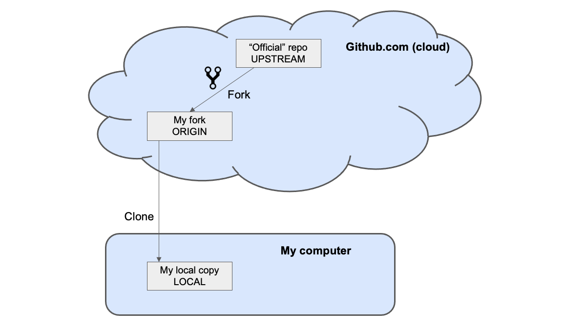
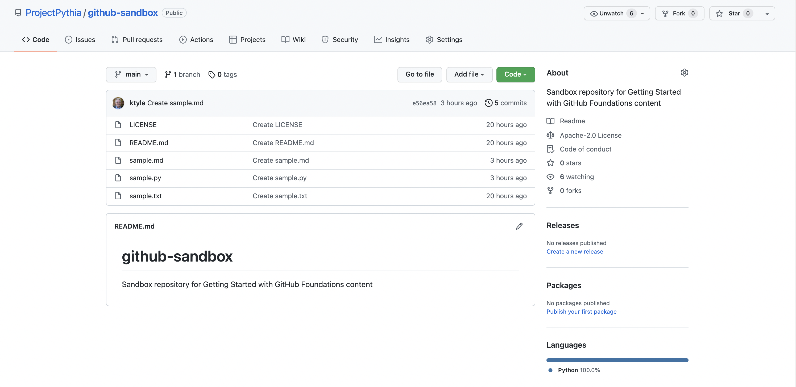
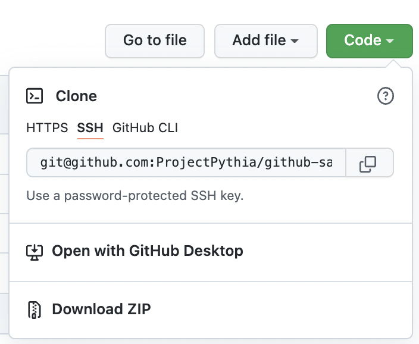
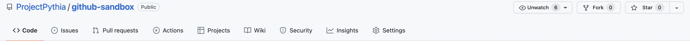
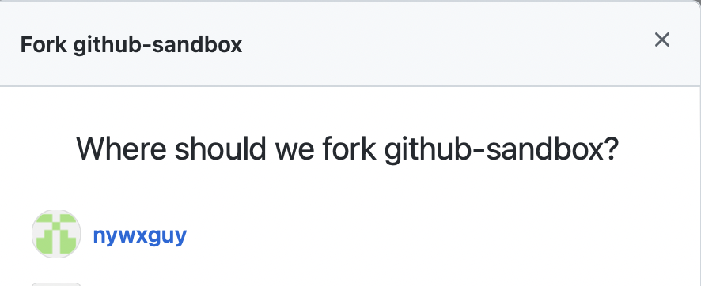
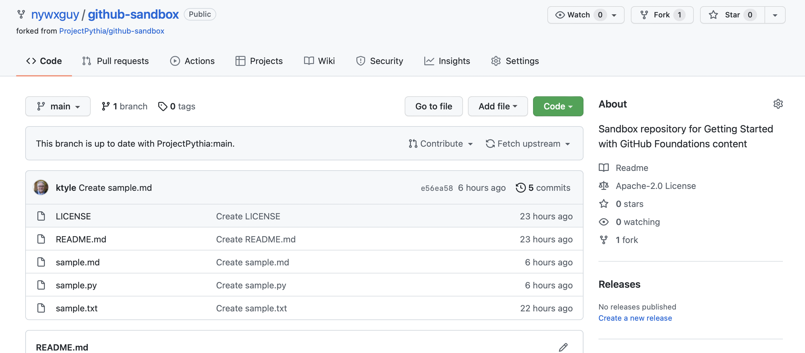
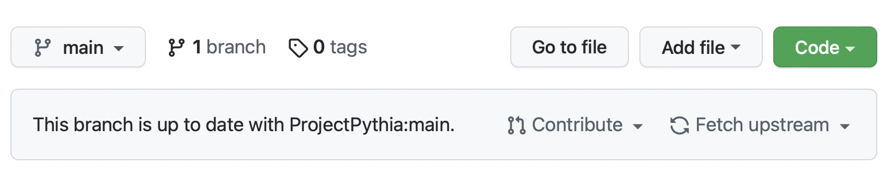

Cloning and Forking a Repository
Prerequisites
Concepts |
Importance |
Notes |
|---|---|---|
Necessary |
GitHub user account required |
|
Necessary |
||
Recommended |
||
Command-line shell |
Helpful |
Time to learn: 30 minutes
Cloning and forking
Cloning and forking are two related terms in the GitHub vernacular that, unfortunately, are not always used consistently throughout the web-o-sphere. In Project Pythia we use the term clone to refer to making a local copy of a remote repository; the source for the copy is a remote repo, and the destination for the copy is your local laptop/desktop. When working with GitHub, a fork, on the other hand, creates a copy of a GitHub repository on GitHub. In other words, both the source and the destination of the fork operations are hosted in the cloud on GitHub. Forking is performed via your GitHub account. While the forked repository may be owned by anyone, the newly created repository will be owned by you. Cloning, on the other hand, is performed using a Git command. Naturally, since the destination of the clone operation is your local computer, you will own the cloned contents. In either case, whether you clone or fork, any changes you make to the newly created repository will not impact the original without taking explicit action (e.g. performing a push or submitting a Pull Request, the topics of later sections in this guide).
Cloning and forking are often used together (more on this later). The illustration below demonstrates the operation of a Fork of a remote repository (UPSTREAM), followed by a clone of the newly created ORIGIN.

Cloning a repository
Cloning is ideal for the following scenarios:
You wish to download, build, and install the latest version of a software package.
You would like to experiment with a repository on your local computer, but do not desire to maintain a separate copy of it (termed a fork, to be covered later in this lesson) on your GitHub account.
You have previously forked a repository to your own GitHub account, and now wish to make changes to it for possible incorporation into the original repo, via a Pull Request.
Let’s consider the 2nd scenario. Say you wish to copy a GitHub repository to a computer you have access to (which could be your own computer, or one you have access to at work or school).
We’ll use a very basic repo that is part of the Project Pythia organization as our example.
First, point your browser to https://github.com/ProjectPythia/github-sandbox:
We see that in the repository, there exists five files. Above the list of files is this row:

Click on the green Code button to the right:
Select the HTTPS option, and click on the copy-to-clipboard icon:

Tip
This link points to where the repository “lives” on GitHub. We will use the term origin to refer to this location.
Now, open up a terminal on your local computer, and if desired, cd into a directory that you’d like to house whatever repos you clone. Type git clone, and then paste in the URL that you copied from GitHub (i.e., the origin):
git clone https://github.com/ProjectPythia/github-sandbox.git
You’ll see something like the following:
Cloning into 'github-sandbox'...
remote: Enumerating objects: 15, done.
remote: Counting objects: 100% (15/15), done.
remote: Compressing objects: 100% (14/14), done.
remote: Total 15 (delta 3), reused 0 (delta 0), pack-reused 0
Receiving objects: 100% (15/15), 7.41 KiB | 2.47 MiB/s, done.
Resolving deltas: 100% (3/3), done.
Windows users
While git is typically part of a Linux or Mac OS command-line shell, similar functionality must be installed if you are running Windows. Download and install the Git for Windows package.
Now, you can cd into the github-sandbox directory which has been created and populated with the exact contents of the origin’s repository at the time you cloned it. If you have a Python installation, you could then type
python sample.py
to run the sample Python script. You should see the following output:
Hello, Python learners!
By virtue of cloning the repo, git automatically registers the URL of the origin’s repository on GitHub. You can show this by typing the following:
git remote -v
You should see:
origin git@github.com:ProjectPythia/github-sandbox.git (fetch)
origin git@github.com:ProjectPythia/github-sandbox.git (push)
Tip
We discuss the git command-line interface in the Basic version control with git lesson.
Congratulations! You have now cloned a GitHub repository!
Now, let’s consider the 3rd scenario for cloning… which involves the related topic of forking.
Forking a repository
Forking is similar to cloning, but has a bit more involved workflow. Scenarios where forking a repo is indicated include the following:
You wish to collaborate on projects that are hosted on GitHub, but you are not one of that project’s maintainers (i.e., you do not have write permissions on it).
You wish to experiment with changing or adding new features to a project, and do not immediately intend to merge them into the original project’s repo (aka, the upstream repository).
In a fork, you create a copy of an existing repository, but store it in your own personal GitHub organization (recall that when you create a GitHub account, the organization name is your GitHub user ID).
Let’s say we intend to make some changes to the Project Pythia Sandbox repo, that ultimately we’ll submit to the original repository as a Pull request.
Note
Be sure you have logged into GitHub at this time!
Notice at the top right of the screen, there is a Fork button:
Click on it:
You should see your GitHub user ID (if you administer any other GitHub organizations, you will see them as well). Click on your user ID to complete the fork. After a few seconds, your browser will be redirected to the forked repo, now residing in your personal GitHub organization:
Notice that the Fork button on the upper right has incremented by one, and there is also is a line relating your fork to the original repo:
Tip
We discuss branches in the Git Branches lesson.
You now have a copy (essentially a clone) of the forked repository, which is now owned by you.
You could, at this point, select one of the files in the repository and use GitHub’s built-in editor to make changes to these text-based files. However, the typical use case that leverages the collaborative power of GitHub and its command-line cousin, git, involves cloning your forked copy of the repo to your local computer, where you can then perform your edits, and (in the case of software) test them on your system.
Cloning your fork is the same as cloning the original repo. Click on the Code button, select the HTTPS protocol, copy the URL to the clipboard, and then run git clone <URL> on your local computer. In this case, you will need to either run this command in a different directory, or rename the destination directory with git clone <URL> <directory-name>, since it will by default use the name of the repo, github-sandbox.
Tip
Unlike cloning, forking is not an option supported by the git command-line interface. In other words, git fork is not a valid command.
Once you’ve cloned the fork to your local machine, try running git remote -v again. You will see that the origin URL now points to your GitHub account or organization.
The main purpose of cloning and forking a remote repository is so that you can make changes to the contents of those repositories in a safe and version-controlled manner. The process of making changes and submitting them as Pull Requests to the original repository is covered in our lesson on Opening a Pull Request on GitHub, but the workflow is as follows:
Edit an existing file or files, and/or create new files.
Stage your changes by running
git add.Commit your changes by running
git commit.(If you created a fork): Push your changes to your fork by running
git push.(If you did not create a fork): Push your changes to the upstream repository by running
git push. This assumes you have write permissions on the upstream repository.In GitHub, create a Pull request.
Summary
The process of making a local copy of a GitHub repository is called cloning. The destination for the cloned copy is whatever machine you ran the
git clonecommand from.Forking a repository also makes a copy of a GitHub repo, but places it in your GitHub organization in the GitHub.com cloud.
Forking allows you to modify a remote repo, without affecting the original version.
After cloning your fork to your local computer, you can make changes to your copy, which you can then submit to the original repo as a Pull request.